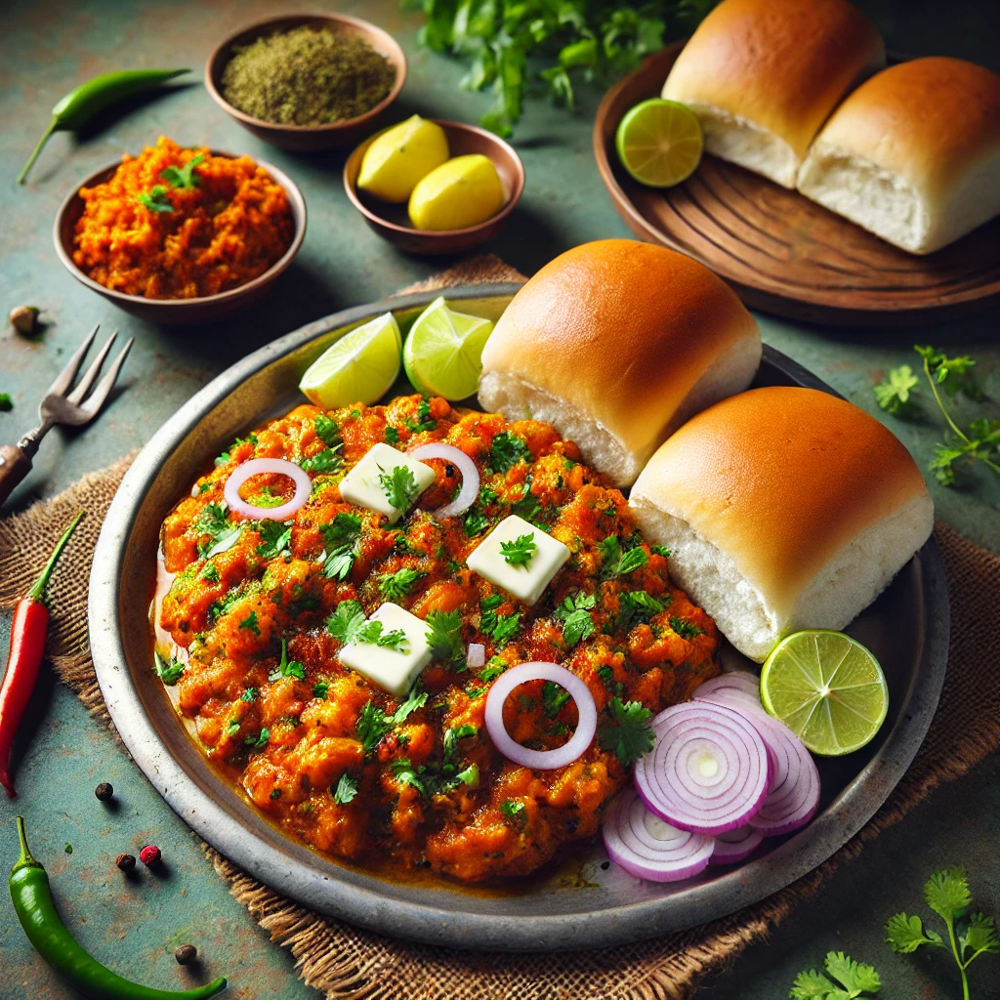

Home
Pav Bhaji

Description
Pav Bhaji is a popular Indian street food consisting of a spicy, buttery vegetable mash (bhaji) served with soft, toasted bread rolls (pav). Originating from Mumbai, this dish is loved for its rich flavors and comforting texture. It’s garnished with butter, onions, and lemon juice for a perfect balance of tangy, spicy, and savory flavors.
Ingredients
For the Bhaji (Vegetable Mash):
- 2 tbsp butter (plus extra for serving)
- 1 tbsp oil
- 1 onion (finely chopped)
- 1 tbsp ginger-garlic paste
- 2 tomatoes (finely chopped or pureed)
- 1 green chili (chopped, optional)
- ½ cup green peas
- 1 small capsicum (finely chopped)
- 2 potatoes (boiled and mashed)
- 1 carrot (boiled and mashed)
- ½ cup cauliflower (boiled and mashed)
- 1 tsp turmeric powder
- 1 tsp red chili powder
- 1½ tsp pav bhaji masala
- Salt to taste
- ½ tsp garam masala
- 1 tbsp kasuri methi (dried fenugreek leaves, crushed)
- 1 tbsp lemon juice
- Fresh coriander leaves (chopped, for garnish)
- Water (as needed for consistency)
For the Pav (Bread Rolls):
- 6 pav (soft dinner rolls)
- 2 tbsp butter
- ½ tsp pav bhaji masala
- Chopped coriander for garnish
Steps
Prepare the Bhaji
Cook the base:
- Heat butter and oil in a large pan. Add chopped onions and sauté until golden brown.
- Add ginger-garlic paste and green chili, then sauté for a minute.
- Stir in chopped tomatoes and cook until soft and mushy.
Add Vegetables & Spices:
- Add chopped capsicum and cook for a minute.
- Mix in boiled and mashed potatoes, carrots, peas, and cauliflower.
- Add turmeric powder, red chili powder, pav bhaji masala, and salt.
- Mash the mixture using a potato masher while cooking on medium heat.
Simmer & Enhance Flavor:
- Add water to adjust consistency and let it simmer for 5-7 minutes.
- Stir in garam masala, kasuri methi, and lemon juice.
- Garnish with fresh coriander and a dollop of butter.
Prepare the Pav
Toast the Pav:
- Heat a tawa (griddle) and melt butter.
- Sprinkle pav bhaji masala and mix it into the butter.
- Slice the pav in half and toast them in the spiced butter until golden brown.